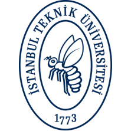

Summary
Process-driven, multidisciplinary systems & software engineer focused on low-level programming and system architectures. Passionate about embedded systems, digital design, and building fault-tolerant frameworks, with a strong secondary interest in computer vision and machine learning.
Education & Employment History
-

Istanbul Technical UniversityBachelor of Computer Engineering – CGPA: 3.30 October 2023 – June 2028 -
HAVELSAN
Middleware Software Engineering Intern July 2026 – August 2026• Embedded GUI Architecture: Designed a high-performance, zero-widget Primary Flight Display (PFD) with LVGL by entirely bypassing standard widgets using direct drawing calls, custom 2D rotation, and clipping masks for zero-overhead flight telemetry rendering.
• Safety-Critical Graphics Verification: Developed a comprehensive robustness testing framework for OpenGL SC 2.0 drivers with process isolation techniques to validate deterministic error handling against driver vulnerabilities, memory limits, and sentinel values.
• Systems Programming & Fault Containment: Engineered a fault-tolerant execution architecture using POSIX process management (
fork,waitpid) to isolate OpenGL memory corruptions and capture fatal driver crashes such asSIGSEGVorSIGABRTwithout halting the main test suite.
Voluntary Work
- ITU Artificial Intelligence Club: Active membership. Involved in decision-making stages. Taken role in the organization and maintaining the order of registration, foyer area, and welcoming of the speakers.
- ITU Turkic World Studies Club: Involved in various organizations, events, and meetings.
- ITU ACM Student Chapter: Taken role in different background parts of various organizations & events.
- Also volunteered under the guidance of Asst. Prof. Dr. Yavuz Köroğlu, actively participated in advanced logic design and engaged in hardware design implementations.
Technical Skills
Low-level & Systems Programming
C C++ Assembly Verilog
OS Concepts & Concurrency
Multithreading POSIX
High-level Programming & App/Web Development
Python Swift/SwiftUI HTML CSS JavaScript
Libraries & Frameworks
OpenGL GLSL LVGL X11 / Xlib SDL2
Developer Tools
Git Shell Scripting (Bash/Zsh) Make
Soft Skills
Time Management
Critical Thinking
Discipline
Teamwork
Crisis Management
Persistence & Emotional Resilience
Languages
English — B2
Italian — A2
German — A1
Open Source Projects
- lvgl-pfd stable work, completed within the internship process: An open-source reference implementation of a Boeing-style PFD designed using LVGL's low-level APIs, providing a modular, bare-metal rendering pipeline tailored specifically for embedded avionics hardware.
- opengl-collab-tests stable work, completed within the internship process: A collaborative API conformance and robustness/edge-case test suite for OpenGL SC 2.0 drivers, employing POSIX process isolation techniques to validate driver determinism and fault recovery under extreme scenarios.
- ardonium-os work in progress: A custom operating system kernel and bootloader written in x86 Assembly from scratch, which is a foundation for the whole O/S that is being developed.
- acme-digisim-gui work in progress: A graphical user interface that is being developed for metwse/acme, using Xlib/libx11.
- lawyer-finder stable work, domain ownership and registration in progress: A website for finding lawyer suites online. This website interprets the law firms & standalone lawyers in terms of name, city, or category.